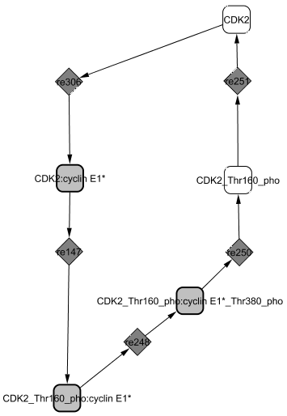
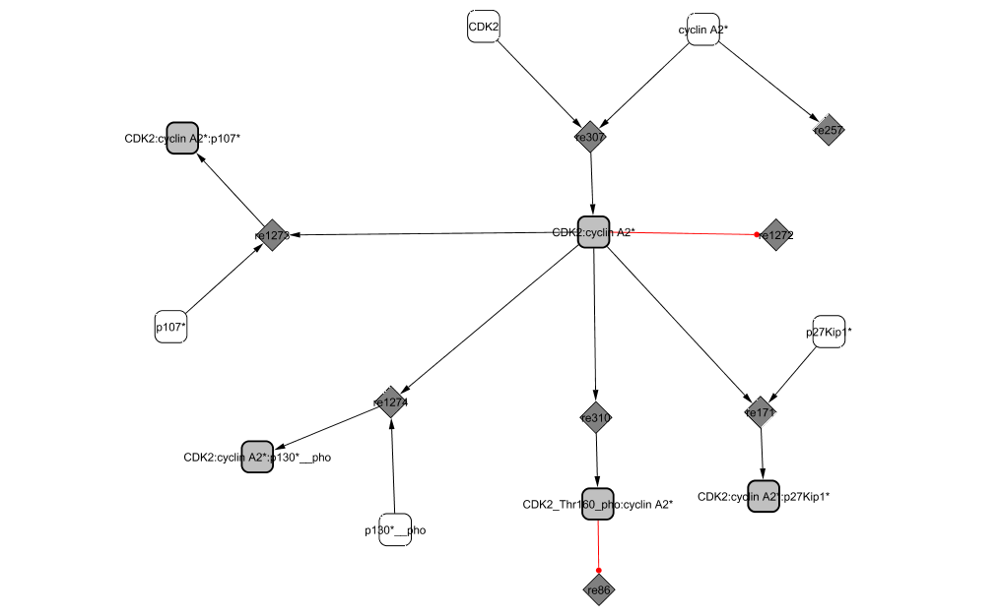

CycE1/CDK2 and CycA2/CDK2 participate in DNA synthesis during S phase.
CycE1/CDK2

At the end of G1 phase, the synthesis of Cyclin E1 is monitored by E2F1 (DeGregori et al., 1995). It binds to CDK2 to form an active complex. Its activity is shut off immediately by the formation of inactive trimers with the cyclin-dependent kinase inhibitors p27KIP1 and p21CIP1 (Sherr and Roberts, 1999). As cyclin E1 is slowly synthesized, more complexes become active and CycE1/CDK2 is capable of phosphorylating not only p130 and p107 to release and inactivate E2F4 repressing transcriptional activity (Classon and Dyson, 2001) but also RB to complete its inactivation started by CycD1/CDK4,6 (Knudsen and Wang, 1997). As a result, E2F1 is totally freed from the complex, which in turn, allows the synthesis of more cyclin E1.
CycE1/CDK2 is also responsible for the phosphorylation of p27KIP1 at Thr-187, which results in targeting p27KIP1 for degradation by proteolysis (Sherr and Roberts, 1999). This mechanism reveals a mutual antagonism between CycE1/CDK2 and its inhibitor p27KIP1.
Similar to its involvement in cyclin D1 inactivation, GSK3 phosphorylates cyclin E1 at Thr-380 which leads to the dissociation of the CDK complex (Minella and Clurman, 2005 ) and the degradation of cyclin E1 (Won and Reed, 1996). CDK2 previously phosphorylated at Thr-160 by CAK (Aprelikova et al., 1995) is dephosphorylated by the KAP (cyclin-dependent Kinase Associated Phosphatase), CDKN3 (Viallard et al., 2001). CycE1/CDK2 level drops abruptly towards the end of the cycle (M phase).
The structural analysis technique reveals a cycle between CDK2 and CycE1.

CycA2/CDK2

Cyclin A2 binds to and activates the cyclin-dependent kinases CDK2. The activity of the complex rises at the end of G1 phase and drops at metaphase (Fung and Poon, 2005).
At the G2/M transition, both E2F1 and DP1 are phosphorylated by CycA2/CDK2 in the active E2F1/DP1/PCAF complex (Datta et al., 2005). The phosphorylation of E2F1 at Ser-375 increases the affinity between E2F1 and RB (Tsantoulis and Gorgoulis, 2005); induces E2F1 degradation (He and Cress, 2002); and diminishes the affinity of E2F1 to DNA (Ianari et al., 2004; Johnson and Schneider-Broussard, 1998). As a result, activation of CycA2/CDK2 leads to the end of E2F1-mediated transcription (Sanchez and Dynlacht, 2005). |